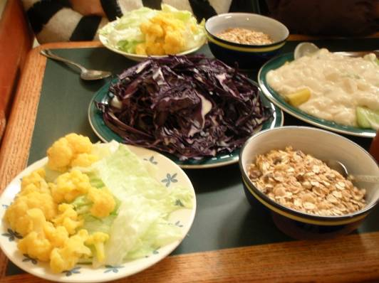
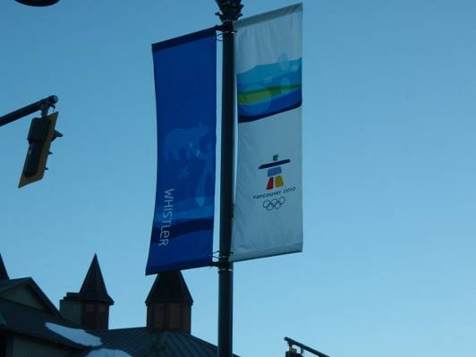
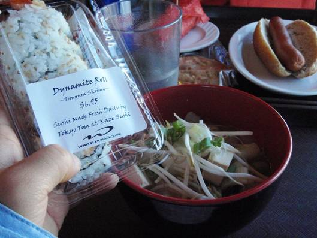
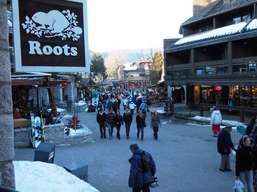

□5日目(2/16)Squamish⇔Whistler (4)
今朝の朝食は、カナダの一般家庭的モーニング？かどうか知らないが、シリアル＋ミルク、レタスとカリフラワーのサラダ、フルーツのヨーグルト和え。昨日のお好み焼きで余った紫キャベツが千切りにして出てきたが、生ではちょっと・・・。かなり不人気。

今日がウィスラー最終日。天気は快晴。4日間全部晴れだなんてウソみたい。このパーティーには雨男はいないようだ。他のパーティーが少し心配。最後のウィスラーを満喫すべく、直登・篠田のボード組はブラッコムへ、KEN・堀部のスキー組はウィスラーへと分かれて入山。月曜日だから客は減るだろうと予想していたが、そんなことはなかった。9:00の段階でゴンドラ乗り場は25分待ちの大行列。しかもなぜか子供が多いようだ。

スキー組が目指したのはウィスラー山にある巨大カール、”Rhapsody
Bowl”(ラプソディー･ボウル)。ここいら一帯はリフト名やコース名などが音楽関係になっている。”Symphony
Exp.”(シンフォニー･エクスプレス)、”Harmony
Exp.”(ハーモニー･エクスプレス)、”Adagio”(アダージョ)、”Flute
Bowl”(フルート･ボウル)などといった具合。この辺りは特に雪質が良く、人も少なめの穴場的スポットとなっているようだ。確かにゴンドラ降り場からはかなり遠い所にあり、地図で良く場所を確認し、リフトを乗り継がないとやって来れない場所にある。さらに、ラプソディー･ボウルは入り口が分かりづらい。やっとこさラプソディー･ボウルの上部に来ると、そこには人はほとんどおらず、雪に覆われた広大なカールがぐるーっと広がっていた。巨大な岩壁が屹立した間にあるブラッコム･グレイシャーとは異なり、緩やかな美しい曲線の広がりを持ったカールである。しばらくこのゲレンデの美しさに感動して、すぐには滑り出すことができなかった。最初は斜面をトラバースするように滑り出し、あまり人が滑っていない地点まで移動した。そこから一気に底に向かって滑走。雪が非常にやわらかい。簡単に舞い上がり、体が粉雪に包まれる。圧雪は全くされていないので少しデコボコはしている。ここでまたまたアクシデントが。雪面が盛り上がった所で堀部が転倒。ひじを強打してしまった。とりあえず様子見で、昼食休憩をとることに。


昼食はゲレンデ内のレストラン。そろそろ日本食が恋しくなり、注文したのは、”JapaneseMisoSoup Noodle”と、”Dynamite Roll”(ダイナマイトロール)という巻き寿司。味噌汁麺は味噌ラーメンといった感じではなく、純和風の味噌汁の中にラーメンが入っているもので、豆腐やもやしも入っていた。ダイナマイトロールは、アボカド入りエビ天巻き。海苔は一緒に巻き込まれている。懐かしい味がした。カナダのレストランでは、チーズやお肉がたっぷり使われたサンドイッチやバーガー類が多い。しかし、日本食は間違いなくカナダに浸透してきている。他のカナダ人客も丼に入った麺やご飯類を、箸で上手に食べている人が多いようだ。食後しばらく休んだが、堀部のひじの痛みがあまり引かないためスキー組はここで下山。

スキー組の2人はボード組が降りてくるまでウィスラービレッジの散策に出ることに。お土産などを買いつつブラブラ。すると、リフトに乗っていた時にカナダ人がいい店だと言っていた”Sushi Village”という寿司屋を発見。しかしまだ開店前であった。


合流してからビレッジ内のお店をぐるっと回って、スコーミッシュに帰宅。スキーの打ち上げにと今日はお酒も買うことに。カナダでは飲酒は19歳以上からと法律にある。夕食はシーフードパスタ。カキ、ムール貝、アサリを野菜とバターで炒め、パスタの上へ。一緒にキッチンにいた人から、「余ったから」ともらった大量のパスタのおかげでデカ盛りに。ワインやリキュールサイダーも飲んで、お腹も心も満腹に。今夜は気持ちよく眠れそう。